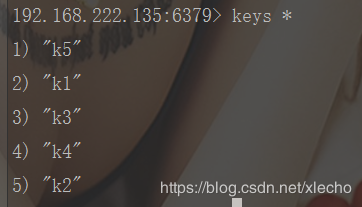
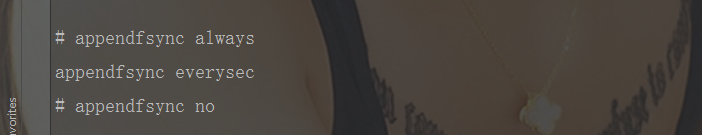

echo编辑整理，欢迎转载，转载请声明文章来源。欢迎添加echo微信(微信号：t2421499075)交流学习。 百战不败，依不自称常胜，百败不颓，依能奋力前行。——这才是真正的堪称强大！！！
Redis持久化的方案其实是很多人接触的比较少的，因为相对应的数据故障不会很多，一次初始化的设置就能保证后续故障的全部顺利解决。本文讲述一下该机制的主要设置方法和持久化方案的对比，同时也会讲述一些持久化的原理。如果对于Redis持久化比较熟悉的希望能够给到你帮助，如果不熟悉的，你大可参考本文对你的Redis进行设置。
可能很多人很少接触这个词，总觉的我们Redis的所有数据都是全部能够永久存储的。然而你可能不知道的是，Redis的数据都是在内存当中的，如果没有持久化策略，你关闭Redis或者之后，你的数据有可能全部都丢失了。我们每再一次登录Redis访问上一次数据的时候，我们都看到了原来的数据，就是得益于Redis的持久化。Redis的持久化简单说就是，将Redis存在内存中的值存储到可以永久存储的地方（磁盘等）
RDB 是 Redis 默认的持久化方案。当满足一定条件的时候，会把当前内存中的数据写入磁盘，生成一个快照文件 dump.rdb。Redis 重启会通过加载 dump.rdb 文件恢复数据。dump.rdb是我们redis文件当中的一个，位置如下图：
RDB是按照规则来触发持久化存储的，在我们的redis.conf中我们可以看到如下的几个配置：
save 900 1 # 900 秒内至少有一个 key 被修改（包括添加）
save 300 10 # 300 秒内至少有 10 个 key 被修改
save 60 10000 # 60 秒内至少有 10000 个 key 被修改这几个配置是不冲突的，只要满足任意一个都会触发。
如果我们都按照正常程序走的话，我们是很难看到没有持久化，或者出现持久化问题的故障现场的。所以我们要学会持久化操作，或者只管看到持久化就需要手动触发持久化问题。这里主要演示两种情况，一种是数据正常备份，一种是数据丢失，我们恢复备份数据。
这两个操作都算是危险操作，我们需要在操作之前进行一下设置一下Redis快照，Redis
提供了两条命令：
我们先在Redis库中设置如下几个值
set k1 1
set k2 2
set k3 3
set k4 4
set k5 5
# 操作完成上面的步骤之后我们停止服务器，触发RDB的自动保存save
shutdown
# 然后再次启动Redis服务
redis-server redis.conf
# 启动完成，查看我们那些刚刚保存的数据是否被持久化了
keys *执行完上面的步骤之后，我们可以看到我们的数据都在，就说明我们的触发备份是成功的。
该操作有一定的风险性，如果是演示练习按照操作来基本不会出现问题，但是生产上慎重操作。我们做该操作之前，一定要注意先备份RDB对应的持久化问题dump.rdb
# 先备份dump.rdb
cp dump.rdb dump.rdb.bak
# 备份完成之后我们确定备份成功在进行下一步操作---清空库
flushall
# 清空之后我们停止服务器
shutdown
# 再次启动服务器，查看之前存储的kye
keys *
再次启动查看的时候，我们发现我们的数据丢失了
# 停服务器
shutdown
# 删除我们现有dump.rdb
rm -rf ./dump.rdb
# 删除成功之后，将我们的备份的dump.rdb.bak重新命名成为dump.rdb
mv dump.rdb.bak dump.rdb
# 确定之后我们再次启动redis服务
redis-server redis.conf
# 检查我们之前丢失的数据是否存在
keys * 完成之后我们查看的数据就出现啦！

AOF：Redis 默认不开启。AOF采用日志的形式来记录每个写操作，并追加到文件中。开启后，执行更改 Redis 数据的命令时，就会把命令写入到AOF文件中。Redis重启时会根据日志文件的内容把写指令从前到后执行一次以完成数据的恢复工作。
# 开关 Redis 默认只开启 RDB 持久化，开启 AOF 需要修改为 yes
appendonly no
# 文件名 路径也是通过 dir 参数配置 config get dir
appendfilename "appendonly.aof"由于操作系统的缓存机制，AOF数据并没有真正地写入硬盘，而是进入了系统的硬盘缓存。什么时候把缓冲区的内容写入到 AOF 文件？

AOF 持久化策略（硬盘缓存到磁盘），默认 everysec
由于 AOF 持久化是 Redis 不断将写命令记录到 AOF 文件中，随着 Redis 不断的进行，AOF 的文件会越来越大，文件越大，占用服务器内存越大以及 AOF恢复要求时间越长。
可以使用命令 bgrewriteaof来重写。AOF文件重写并不是对原文件进行重新整理，而是直接读取服务器现有的键值对，然后用一条命令去代替之前记录这个键值对的多条命令，生成一个新的文件后去替换原来的 AOF 文件。
auto-aof-rewrite-min-size:默认64M。设置允许重写的最小aof文件大小，避免了达到约定百分比但尺寸仍然很小的情况还要重写。
那么对于AOF和RDB两种持久化方式，我们应该如何选择呢？
如果可以忍受一小段时间内数据的丢失，毫无疑问使用 RDB 是最好的，定时生成RDB 快照（snapshot）非常便于进行数据库备份， 并且 RDB 恢复数据集的速度也要比 AOF 恢复的速度要快。否则就使用AOF重写。但是一般情况下建议不要单独使用某一种持久化机制，而是应该两种一起用，在这种情况下,当 redis 重启的时候会优先载入 AOF文件来恢复原始
的数据，因为在通常情况下 AOF 文件保存的数据集要比 RDB 文件保存的数据集要完整。
---
做一个有底线的博客主